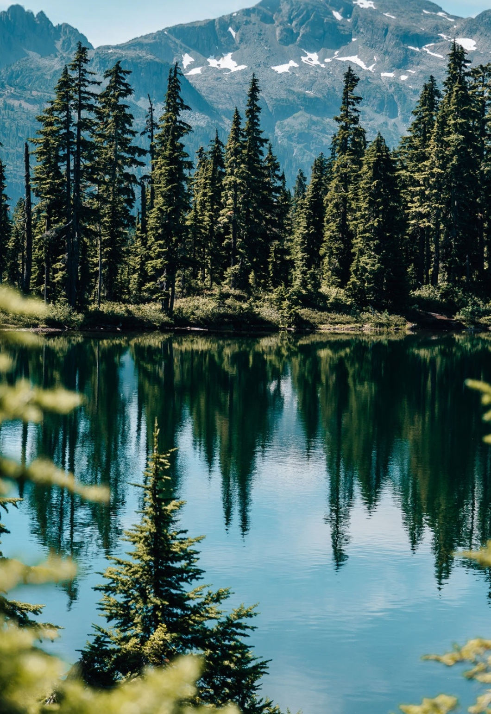

Experiențe locale
Trasee ușoare, locuri cu liniște, patrimoniu și propuneri de vizitare gândite pe înțelesul tuturor.
Vezi experiențeleHațeg Alternativ aduce împreună natura, patrimoniul, gastronomia și ideea de liniște într-un proiect gândit simplu, clar și prietenos.

Gândește Hațeg Alternativ ca pe o invitație la un alt ritm: mai puțină grabă, mai mult sens și mai multă apropiere de loc.
Trasee ușoare, locuri cu liniște, patrimoniu și propuneri de vizitare gândite pe înțelesul tuturor.
Vezi experiențele
Partea culinară completează experiența prin mese locale, atmosferă caldă și ideea de gust autentic.
Vezi gastronomic
O etapă viitoare a proiectului, gândită pentru confort, liniște și o estetică coerentă cu zona.
Vezi pensiunea
Proiectul este construit pentru oameni care nu caută doar obiective bifate, ci și atmosferă, povești locale și un mod mai firesc de a petrece timpul.
Hațeg Alternativ propune o experiență mai apropiată de ritmul real al zonei: mai puțin aglomerată, mai clară și mai memorabilă.
Începe cu experiențelePutem porni de la o experiență de câteva ore, o masă locală sau o propunere mai amplă, în funcție de ce vrei să descoperi în Țara Hațegului.